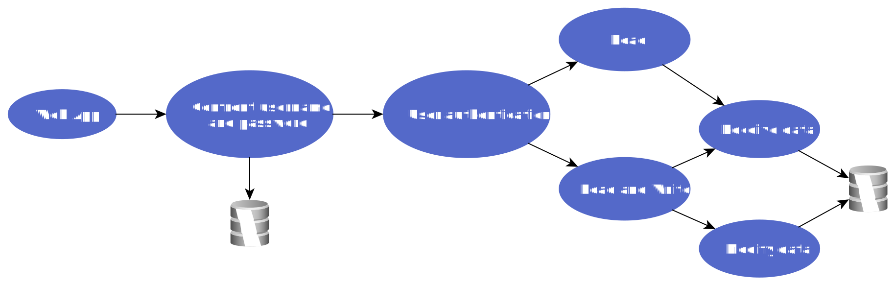

Argomento: Dustbin IoT
Sistema intelligente per la gestione della raccolta dei rifiuti di una Smart City.

Tesi del corso
Requisiti del progetto
- Usare sensori ad alta risoluzione.
- Garantire l'efficienza del consumo energetico dei dispositivi integrati.
- Garantire la comunicazione in tempo reale dei nodi di rete.
- Interfaccia web.
- Garantire dati affidabili per ottimizzare il risparmio di carburante dei veicoli destinati alla raccolta.
- Garantire lo svolgimento dei compiti riducendo così il danno economico causato dal disservizio.
- Basso costo di prototipazione.
- Garantire la crittografia delle comunicazioni.
- Garantire la sicurezza del DB (autorizzazioni e crittografia delle password).
Panoramica del Progetto
A seguito delle indagini condotte dai media in merito all'esecuzione dei compiti assegnati alla figura del netturbino all'interno dell'AMA comunale (di seguito il "cliente" o "azienda"), sorgono problemi nello svolgimento delle mansioni assegnate ai dipendenti in servizio con conseguente discontinuità del servizio stesso in tutta l'area di competenza e, nello specifico, nell'ambito della raccolta dei rifiuti. In particolare una parte del personale dei netturbini svolge solo parzialmente le proprie mansioni, risultando fuori dal controllo dell'azienda stessa.
Si segnala inoltre che il cliente attualmente utilizza un sistema basato su tecnologia QR Code che, utilizzando applicazioni per dispositivi mobili su dispositivi assegnati all'operatore, non rileva efficacemente l'andamento del servizio. Infatti, tramite le predette app, il netturbino in servizio garantisce la raccolta dei rifiuti interagendo con i codici QR presenti sui cestini, salvo poi non portare a termine il compito a lui assegnato.
Da queste premesse deriva l'esigenza del cliente di un efficace sistema di controllo per tornare a garantire la continuità del servizio, nonché gli obiettivi di questo progetto.
La Sfida
Nell'ambito delle specifiche IoT-A, è necessario sviluppare un prototipo che contribuisca allo sviluppo di un intelligente soluzione per l'ottimizzazione delle attività di raccolta dei rifiuti, rispettando i requisiti delineati sopra.
I dati raccolti dai sensori dei cestini devono essere consegnati al database dell'applicazione per consentirne la successiva visualizzazione.
L'Approccio e Soluzione
Come primo approccio, il framework Node-Red è stato utilizzato per creare un prototipo prima del vero sviluppo del applicazione web sulla piattaforma Django. Il video seguente mostra il risultato ottenuto nella prima settimana.
La soluzione finale è una rete di "nodi sensori" (dispositivi che incorporano un sensore di rilevamento) posizionati nelle pattumiere della città che comunicano in rete attraverso appositi gateway, fornendo dati in tempo reale a un server. I dati sono memorizzati in un database relazionale con diversi livelli di autorizzazione e consultabile H24 tramite interfaccia web. Gli aggiornamenti a questa web app possono essere eseguiti senza interrompere il servizio. E inoltre previsto il controllo remoto dei suddetti nodi.
L'immagine seguente illustra il flusso principale dell'applicazione web. Solo l'amministratore dispone dell'autorizzazione di scrittura.
I dati del sensore vengono inviati tramite un computer (pc, raspberry o arduino) con accesso ad internet dedicato alla ricopilazione, elavorazione e invio finale delle informazioni in formato JSON al database. Tutto questo viene fatto da db-filler (un altro programma che ho sviluppato) che consente di svolgere queste attività senza compromettere l'integrità dei dati o del database in sicurezza. In ambito sicurezza, oltre alla gestione degli errori, consente l'accesso al database tramite una password che viene richiesta al primo accesso o in caso di riavvio del computer.
Prima di scrivere i nuovi dati, il db-filler controlla il database utilizzando le query. Ciò consente di identificare se a il sensore è nuovo e deve essere creata una nuova istanza o se esiste già e deve essere aggiornato.
I Risultati
Il risultato è un'applicazione web che risolve le esigenze del cliente H24 al giorno per un prezzo inferiore a € 50 per ogni pattumiera. Il prodotto finale che ho realizzato è open source ed è disponibile online come il suo prototipo.
Il progetto Dustbin IoT è scalabile nell'integrazione di nuove funzionalità e consente a questa applicazione web di migliorare progressivamente. Di seguito è riportato un elenco di alcune delle funzionalità che potrebbero essere implementate per migliorare questo programma.
- Invio automatico di email o notifiche agli operatori per comunicare l'assegnazione di una raccolta.
- Generazione automatica degli ordini di servizio in base ai seguenti parametri: operatori con minor carico di lavoro, capienza dei cestini e giornate adatte alla raccolta (esclusi festivi e fine settimana).
- Calcolo del percorso più efficiente per effettuare la raccolta e possibilità di visualizzarlo su mappa con accesso al GPS dall'applicazione.
- Supporto in più lingue per una maggiore comprensione da parte degli operatori.
- Tutorial su come utilizzare l'applicazione al primo accesso, ripetibile se richiesto.
- Possibilità di identificare chi è il responsabile della giornata in corso e se necessario contattarlo dall'app.
Testimonianza
Programmatore brillante e con la determinazione nel sangue, Ariel è il membro ideale di qualsiasi team: contribuisce in modo decisivo durante tutte le fasi del progetto e porta a termine i propri task in modo impeccabile e puntuale. Questi fattori, uniti al livello di competenza raggiunto da Ariel nell'ambito della programmazione in python e dei database relazionali, hanno permesso lo sviluppo di un sistema IoT per la raccolta intelligente dei rifiuti urbani in tempi rapidissimi. Alla conclusione del progetto Ariel ha comunque continuato ad implementare da solo il prodotto creandone una vera e propria versione 2.0.